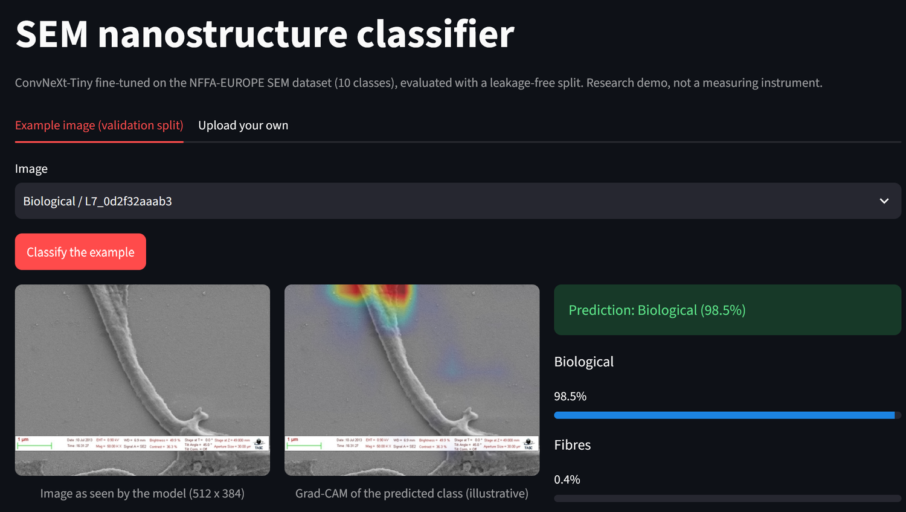

🔍 SEM Nanostructure Classifier
A classifier for scanning-electron-microscopy (SEM) images of nanostructures, built to answer one question: how much of the reported accuracy is real, once near-duplicate leakage and instrument shortcuts are controlled for?
Live demo: sem-nanostructure-classifier.streamlit.app · GitHub Repository · Weights and model card (Hugging Face)

The Streamlit demo: pick a validation example or upload an image, see the top-3 classes with calibrated probability, an "uncertain" flag below a threshold chosen on validation, and an illustrative Grad-CAM.Why this project
Image classifiers on microscopy data often report very high accuracy that does not survive a closer look: the same sample photographed several times lands in both train and test, and the instrument's information bar can carry the label. Instead of chasing a leaderboard score, this project fixes the evaluation rules in a written specification before any code, and then reports what is and is not established — including the negative and inconclusive results.
Results at a glance
Test split, group-aware (near-duplicate clusters kept together), mean of 3 seeds:
| Model | Macro-F1 (95% CI over clusters) | Accuracy | ECE raw → calibrated |
|---|---|---|---|
| ConvNeXt-Tiny | 0.956 [0.939, 0.966] | 0.972 | 0.024 → 0.006 |
| ResNet-50 | 0.944 [0.924, 0.957] | 0.965 | 0.024 → 0.009 |
Dataset: NFFA-EUROPE "100% SEM Dataset", 10 classes, 20,837 images after removing 332 exact duplicates (CC BY). ConvNeXt-Tiny is ahead of ResNet-50 in every comparison, but this was not tested formally.
What the evaluation showed
- Leakage. A random split gives macro-F1 0.968 (ConvNeXt-Tiny) against 0.956 on the group-aware split, a gap of 1.3 pp with the same sign in both backbones; the intervals include or touch zero, so the gap is not established. In the random split 23.4% of test images have a near-duplicate "cluster-mate" in train; these are classified at 99.6-99.9% accuracy, the rest at 96.4-97.2%.
- Info bar. Removing the bottom 18.75% of every image (where the bar sits) costs 1.4 pp macro-F1 on test (interval +0.4 to +2.3), removing the same amount from the top costs nothing. The validation split shows no drop. Reading: no evidence of a shortcut that carries the classification; a contribution of about 1-1.5 pp in the small classes cannot be excluded.
- Confidence. Temperature scaling (T = 3.3) cuts the expected calibration error from 0.024 to 0.006. Abstaining below a threshold chosen on validation keeps 94% of test images at 99.2% accuracy (overall 97.2%) and catches about 71% of the errors, but it abstains mostly on rare classes (44% of Porous_Sponge, 37% of Films_Coated_Surface).
Methodology
- Specification first.
SPEC.mdfixes the data-security and leakage rules, the split procedure and the test protocol before the code exists; every change is logged in it with a date. - Near-duplicate-aware splits. Groups are connected components of cosine similarity ≥ 0.94 between frozen ResNet-50 features; whole clusters go to one of train/validation/test (70/15/15). A test asserts that no cluster crosses splits; thresholds 0.90 and 0.98 serve as a sensitivity check.
- Fixed configuration, no tuning. One training recipe for every run, 3 seeds per model, epoch chosen on validation macro-F1.
- Test evaluated once. Each checkpoint touches the test split exactly once, after the configuration was frozen; nothing was changed after seeing test results. The calibration and abstention analysis is post-hoc on stored test logits, with all parameters fitted on validation only.
- A bug caught before testing. The first group-aware split put almost all large clusters into validation and test. It was noticed from the validation loss, the split was fixed and all group-aware runs were repeated; the details are in the spec.
Engineering
- Deployment: Streamlit Community Cloud; the weights live on the Hugging Face Hub and are downloaded on the first start and verified against a recorded sha256 (a mismatch means no model is loaded). Uploads are processed in memory only, nothing is stored or logged.
- Tests and CI: pytest (splits, metrics, calibration, inference, download integrity), ruff, and a CI guard that fails if weights, archives, keys or files over 5 MB are ever committed.
- Tech stack: PyTorch, torchvision (ConvNeXt-Tiny, ResNet-50), Grad-CAM, Streamlit, GitHub Actions, Hugging Face Hub.
Limitations
- One lab, one dataset, no external test set; the group definition (embedding similarity) is a proxy for "same sample".
- Confidence intervals describe the test sample, not the variation between trainings; with 3 seeds, differences of about 1 pp are at the noise level of single runs.
- Small classes have 22-46 test images, so per-class numbers move by several points with one image.
- The demo has no out-of-distribution detector: any image, including a photograph, gets one of the 10 SEM classes.
- Two ablations from the original plan (class weights, stronger augmentation) were not run.
Related: the same discipline of group-aware splits and honest error analysis, applied to a different domain, is in the Cuneiform Sign Classifier (split by tablet, not by image). A smaller transfer-learning classifier with an honest baseline comparison is the Emotion Recognition project. The nanostructures behind the SEM classes connect to the Carbon Nanotube Visualizer.